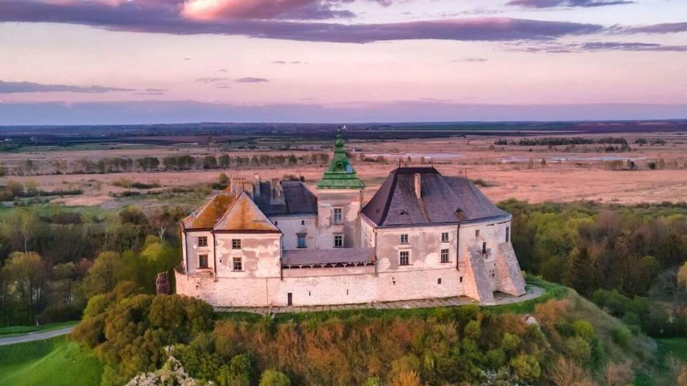
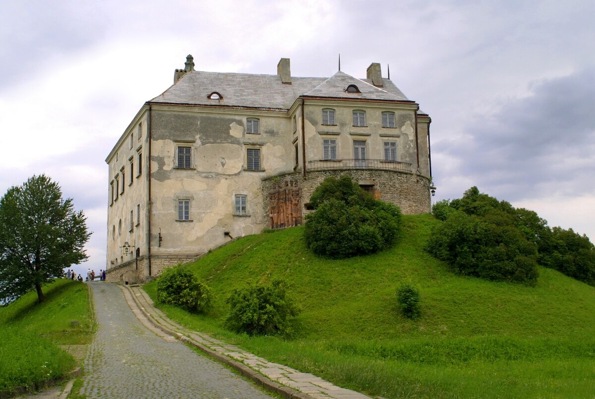
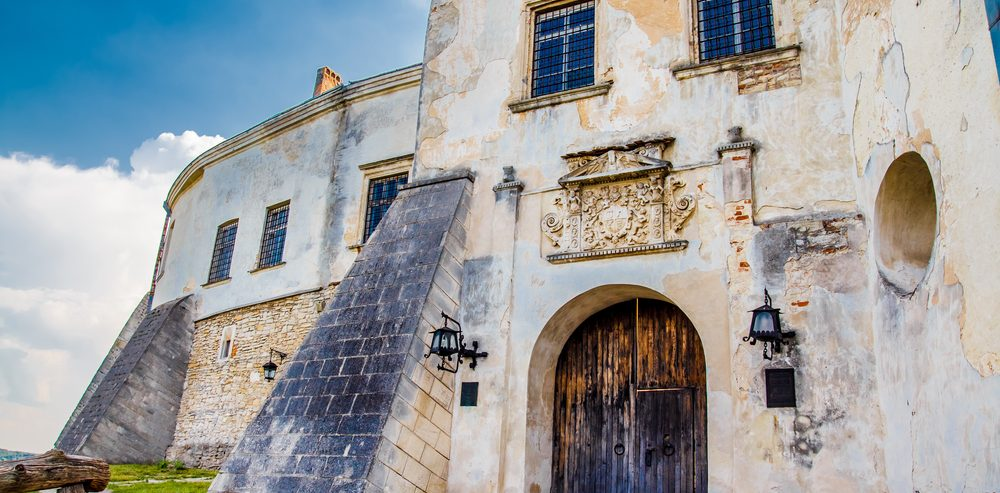
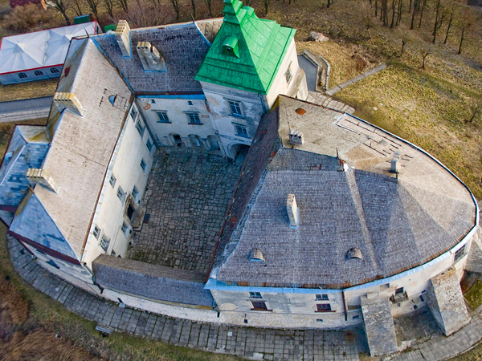

Олеський замок
Історія
Пам’ятка архітектури ХІІІ-ХУІІІ ст. У 2-й пол ХУ ст. Олеський замок перестав бути оборонною спорудою і перетворився у резиденцію магнатських родів – Даниловичів, згодом Собеських, Жевуських. У 1629 р. в Олеському замку народився майбутній король Польщі Ян ІІІ Собеський. Експозиція замку представляє вітчизняне мистецтво Х-ХІХ ст. Тут зібрано ікони, безцінні твори живопису, скульптури, ужиткового мистецтва (зокрема, меблі та гобелени). Особливу вартість має збірка скульптури ХУІ-ХУІІІ ст., українського портрету ХУІ-ХІХ ст. В комплекс, крім замку, входить колишній монастир капуцинів з костелом св. Йосифа (1739 р., архітектор – Мартин Добравський). В монастирі позташована експозиція ренесансної скульптури, є виставкові зали та студійні фондосховища, в яких зберігаються колекції дерев’ної скульптури 15-20 ст.
Замок-музей
Зі стану руїни замок вивела ґрунтовна реставрація і створення музею. З 1954 року приступили до створення проекту реставрації, а 1958 року почалися власне будівельні роботи, в основному завершені до 1965 року. Були плани пристосування твердині під дім відпочинку. Однак замок передано Львівській картинній галереї для музейних цілей. У 1970—1974 роках під керівництвом Бориса Возницького тривало відновлення замку як архітектурної пам'ятки, йому повернено вигляд періоду найбільшого розквіту — кінця XVIII століття. До 1975 року створено експозицію, і музей відкрився. У 1989 році отримав статус музею-заповідника.
Експозиція
Різноманітність фондів Львівської галереї мистецтв дала змогу створити своєрідну експозицію, що нагадує замкові експозиції в інших містах, але досить відрізняється від них. Бурхлива історія замку не сприяла збереженню багатьох автентичних речей, тому автентику представляють фасади будівлі, замкові портали, геральдичні рельєфи з каменю. Музеєфіковані цокольні приміщення та приміщення першого поверху, що в давнину використовувались як господарські. Житловими були приміщення другого та третього поверхів. Скрізь, де були залишки оздоб стародавніх інтер'єрів, вони відреставровані. Палацовий характер інтер'єру частково збережений в сучасній музейній залі № 6. Над проектом працював скульптор Леблан у 2-й половині XVIII століття. Тоді ж виконані декоративна ліпнина на північній стіні та карниз біля стелі. У XVIII столітті стелю прикрашав плафон на міфологічну тему (Викрадення Європи). Альков прикрасили станковою мозаїкою. Суміш з фарби, гіпсу, товченого мармуру та алебастру наносили на стіну, комбінуючи різні кольори, що імітувало природний мармур. Мозаїки створюють архітектурні деталі, додатково прикрашені гірляндами з фруктів та квітів. Пошкоджені мозаїки збереглися у трьох залах і частково відновлені. Палацовий характер цих залів підсилюють оригінальні меблі XVII—XVIII століття та дві дерев'яні скульптури у повний зріст — алегорії чеснот.
- Серед експонатів замку:
- стародавні неглазуровані рамочні кахлі XII століття;
- українські ікони;
- портрет Миколи Василя Потоцького;
- чотири портрети Жевуських, врятовані з палацу в Роздолі;
- мармурове погруддя доби відродження королеви Варвари Радзивілл;
- натрунні польські портрети;
- декоративна композиція «Вакх та Аріадна» (худ. Юрій Семигиновський, що навчався у Римі в XVII столітті);
- зразки дерев'яної скульптури;
- надгробок Анни Сенявської, врятований з руїн замкової каплиці в Бережанах (гіпс, 1574 рік, пізній ренесанс);
- західноєвропейські гобелени доби бароко та маньєризму («Поліфем», «Одісей» тощо).
Фотографії

|
 |  |  |